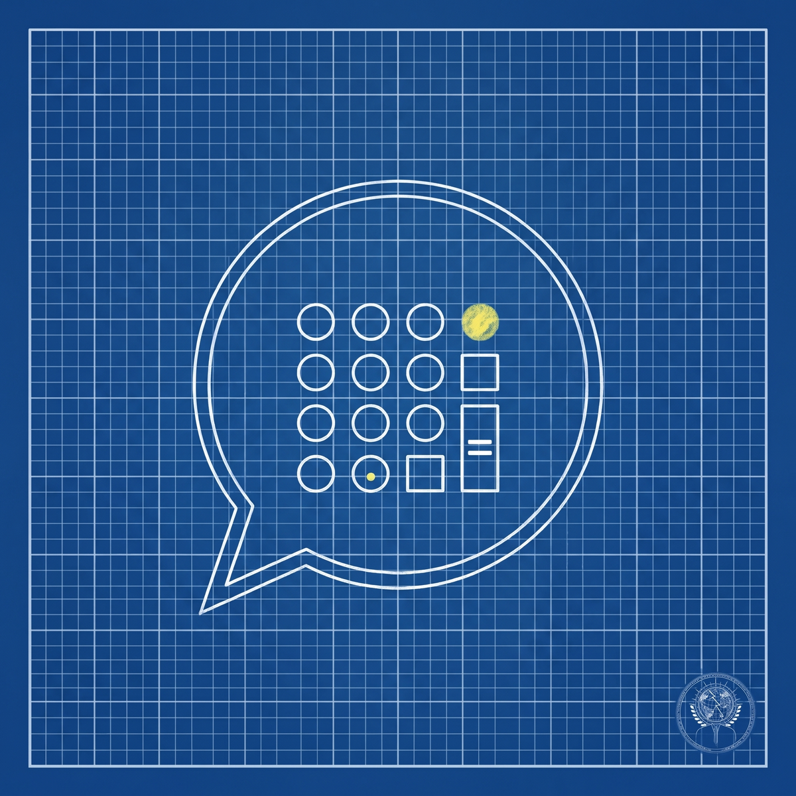
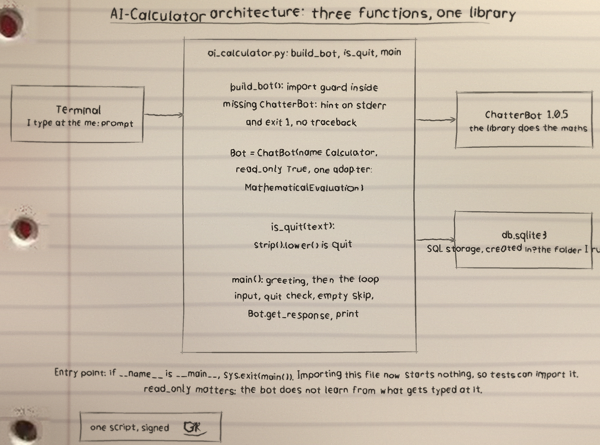
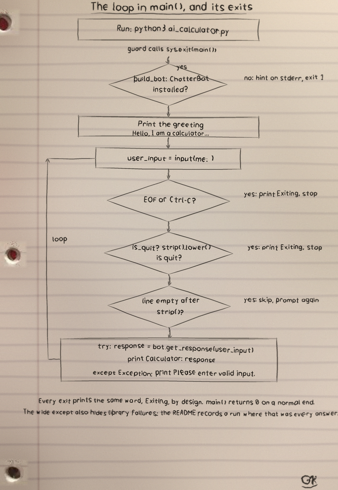
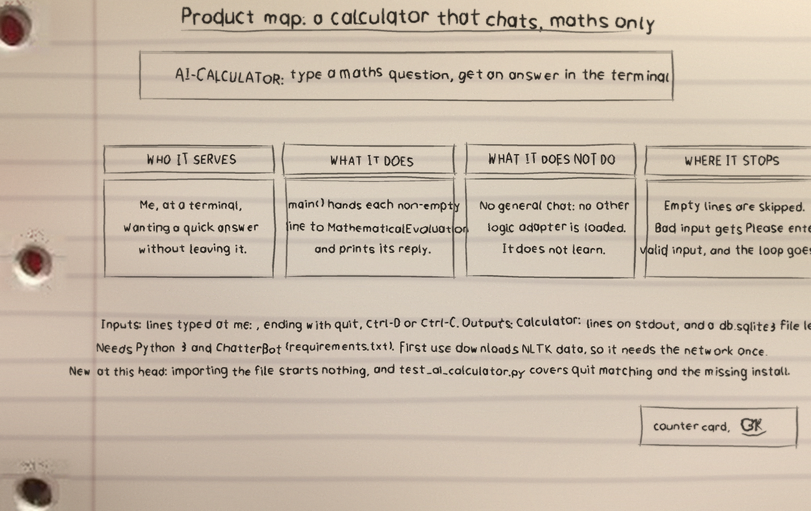

AI Calculator
Log entry, launch
Launch note
AI Calculator is one of my projects. The README in the repo is short, so this page sticks to what the files themselves show.
It is a terminal calculator that wraps ChatterBot MathematicalEvaluation in read only mode. It lives in a terminal prompt that prints Hello, I am a calculator. How may I help you?
What it is
AI Calculator: 3 files, 32 counted lines across Python 30, Markdown 2. One job, done in the open, in files you can read.
The biggest piece
ai_calculator.py carries the most lines. If the project grows, that file is where the growth lands first, for better or worse.
The honest gap
No test files yet. That is the honest gap, and the roadmap in the visuals folder says what the first one should cover.
Log entry, ascent
Run it
The repo README has the exact commands for this one. The shape is the shape for most of my projects: clone it, read the top file first so you know what will happen, then run it on something you do not mind breaking.
$ git clone https://github.com/Epsilon0xCell/AI-Calculator.git
$ cd AI-Calculator
$ pip install -r requirements.txt
Check the instruments Open the repo
Typing quit exits and prints Exiting. Closing the input (EOF, for example Ctrl-D) or pressing Ctrl-C also exits cleanly with Exiting. Input the bot cannot evaluate gets the reply Calculator: Please enter valid input. and the loop continues.
One admission, kept from the repo: the maths answering was not re-verified end to end on modern Python. ChatterBot's pinned dependencies are too old for a current Python 3.12 install without substitutions, and its NLTK corpus downloads were blocked in the test sandbox, so treat the maths answering as provided by ChatterBot's MathematicalEvaluation adapter, not as something this repo re-implements.
Log entry, instruments
The code, as it sits in the repo
From ai_calculator.py, line 1 on. I did not tidy it for the page. What you see is what the file has.
from chatterbot import ChatBot
# naming the ChatBot calculator
# using mathematical evaluation logic
# the calculator AI will not learn with the user input
Bot = ChatBot(name = 'Calculator',
read_only = True,
logic_adapters = ["chatterbot.logic.MathematicalEvaluation"],
storage_adapter = "chatterbot.storage.SQLStorageAdapter")
# clear the screen and start the calculator
print('\033c')
print("Hello, I am a calculator. How may I help you?")
while (True):
# take the input from the user
user_input = input("me: ")
# check if the user has typed quit to exit the prgram
if user_input.lower() == 'quit':
print("Exiting")
breakLog entry, manifest
The files that matter
| File | Lines |
|---|---|
ai_calculator.py | 30 |
README.md | 2 |
LICENSE | 0 |
Names doing the work: no named functions in the snapshot.
Log entry, sheets
Drawn by hand
I sketch my projects on notebook paper so I have to understand them well enough to draw them. The full set, with the counts and how they were counted, is the AI-Calculator-Visuals folder in the repo. Nothing is drawn over the binder holes. That is a rule, not a style.


